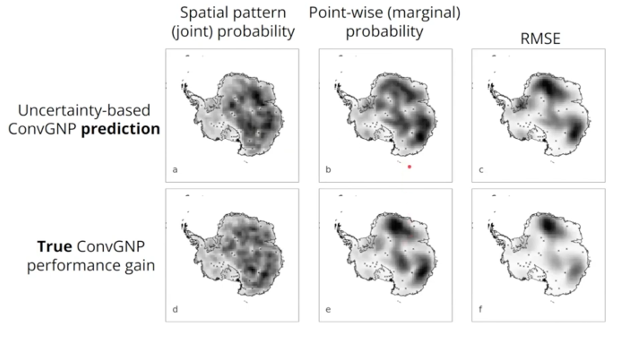

Architecture (configurable per experiment)
- unet_channels — number of channels per U-Net layer.
- unet_kernels — convolution kernel size.
- num_basis_functions — basis functions used by the decoder.
- likelihood — predictive distribution, e.g. Gaussian or zero-inflated Bernoulli-Gamma for precipitation-like targets (mixture probability + gamma shape/scale).
Training
Adam/AdamW/SGD optimizer, reduce-on-plateau LR scheduling, early stopping on validation loss, and periodic validation against both the gridded truth and held-out station observations. Runs are tracked in Weights & Biases (metrics, prediction maps, calibration/PIT histograms).
Sensor placement acquisition functions
ContextDist
Favors locations far from existing context observations.
Stddev
Greedily picks the location with highest predictive uncertainty.
MeanMarginalEntropy
Picks locations that most reduce mean marginal predictive entropy.
OracleRMSE
Uses ground truth to pick the location that most reduces RMSE — an upper-bound reference, not a deployable strategy.
Placement runs load a trained model from a W&B run and search via DeepSensor's GreedyAlgorithm.